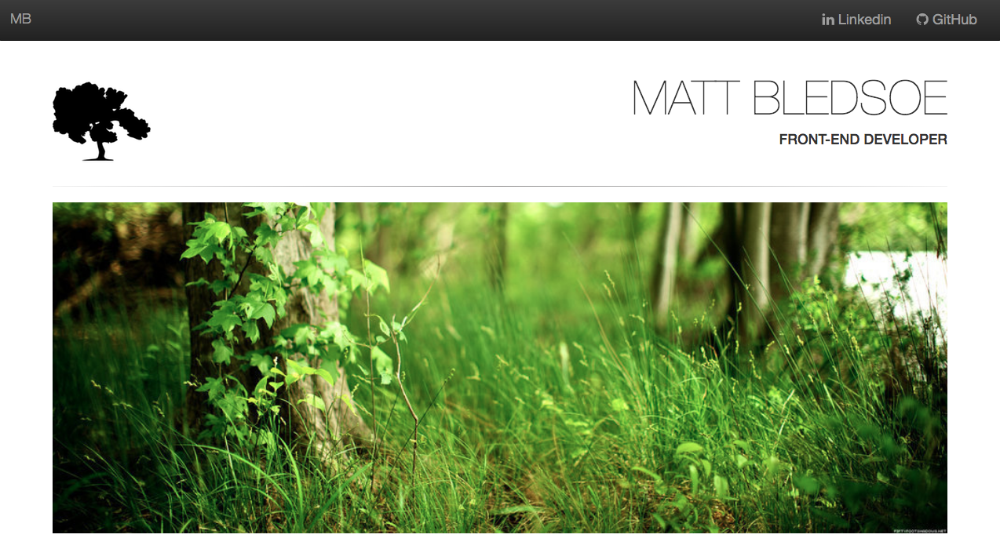
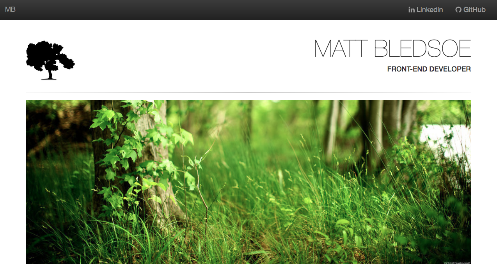

The arts by accident
I never thought of myself as an artist or a creative person when I was growing up. I was into sports and I participated when I had to but never thought that I had a creative side. The day in high school that I skipped soccer practice and went with some friends to audition for the school musical changed my life. I didn't know I could sing or act or dance, but soon found out that I was very creative and able. This changed my college plans and I decided to major in theatre at Catawba College, but alas my dreams were cut short due to life. I began to work where I could find it and not believing that I could be more. Fast forward some years and my wife and I have a daughter, we made the decision that I would stay home and find out what I wanted to do with my life. I did a lot of research and more research and testing and I came to the conclusion that I could teach myself how to be a web developer and design amazing websites. I tried to leverage everything that I could that was free first. I then found Udemy and then Udacity. I formalized my education and embarked on a frontend web developer from Udacity, and I learned so much. This still wasn't enough. The sites I created in tutorials were all the same and I knew there had to be a better way. I found the Charlotte UX meetup and attended a talk about "What is UX". This meetup again changed my course and I found a whole new world and way to levage past skills and creative experiences to create new and meaningful things. Now I do this for a living, I am a hybrid designer/developer and couldn't be happier. I even love to share what I do with others to help them find there place where they belong. I really love what I do and I want to learn and grow and share my experiences with the world.

Don't give up, don't ever give up.
Share what you know
I was given the opportunity to teach at Tech Talent South in April of 2018. This was something that I knew I wanted to do but I was totally unsure if I was even qualified. I had some great teachers and mentors while learning development, how was I going to measure up them? What if one of my students asked me a question that I didn’t know? I had reservations but I knew that I needed to get over these fears and trust that my teachers had taught me well enough to handle whatever was thrown my way.
TTS
My first class was Intro to web development and design. I only had five students in the class and most of them were incredibly novice. I quickly found that I was pretty good at teaching and talking about what I knew and was passionate about. The class was 4 weeks long and we met twice a week and covered topics on HTML5, CSS, Javascript, responsive design, advanced CSS, and bootstrap. The class culminated with a project that where the students had to design and develop a website of their choosing. I learned so much teaching this class and was so proud of my students. I got the opportunity to teach this again this past September.
Off the Rails
 My next two classes were the part-time and full-time Fullstack Code Emmersion for the summer session. This was quite a jump up from where I was before. TTS was in a kind of bind, but I had done so well with the intro class that they wanted me to try my hand at teaching Ruby development. I had learned the basics of Ruby and had done fullstack Javascript development, but I had my reservations once again. I had 6 weeks to get rock solid with Ruby and the Rails framework. This was a challenge but quickly picked up more than enough to teach the class and actually build stout applications. This was such a great experince for me to learn and then teach the material immediately. I had to really focus on how to learn something deeply and then teach it to brand new devlopers. The classes were awesome and I had some amazing experiences on this journey. I was even able to get one of my students a job before the class was over. I learned a very valuable lesson this summer and that is if you work hard enough you can really acheive anything.
My next two classes were the part-time and full-time Fullstack Code Emmersion for the summer session. This was quite a jump up from where I was before. TTS was in a kind of bind, but I had done so well with the intro class that they wanted me to try my hand at teaching Ruby development. I had learned the basics of Ruby and had done fullstack Javascript development, but I had my reservations once again. I had 6 weeks to get rock solid with Ruby and the Rails framework. This was a challenge but quickly picked up more than enough to teach the class and actually build stout applications. This was such a great experince for me to learn and then teach the material immediately. I had to really focus on how to learn something deeply and then teach it to brand new devlopers. The classes were awesome and I had some amazing experiences on this journey. I was even able to get one of my students a job before the class was over. I learned a very valuable lesson this summer and that is if you work hard enough you can really acheive anything.
My first BIG break
While working as a freelance developer you have gigs that come along that are really awesome and can not only provide a paycheck but teach you so much. I had the privledge to work with The Big Idea Group last Christmas. Big has only one developer and he is quite talented. He was going on a vacation and they needed someone to fill in while he was gone. I was hired to shadow him for 1 week and then fly solo. My primary responsibility was to develop responsive emails and deploy them via the salesforce software. I would get the PSD files from the designers and slice the images. I then would drop the images into the template and change any text and background colors. This would have been easy if I had any experience with photoshop. I learned on the fly how to use photoshop and salesforce and a new code base and a filing system. The people at Big were so awesome and I survived my solo week with flying colors. Here are some of the emails that I coded.


Webpages
We all have to start somewhere and this is where I started. Below are some website that I designed over the years.


 
